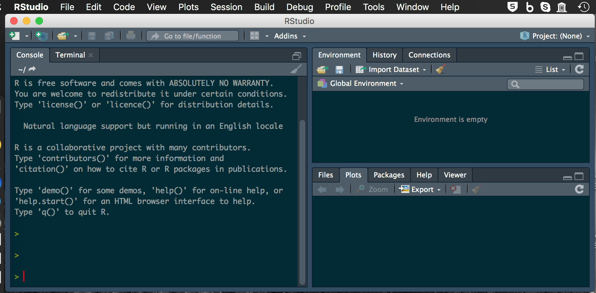
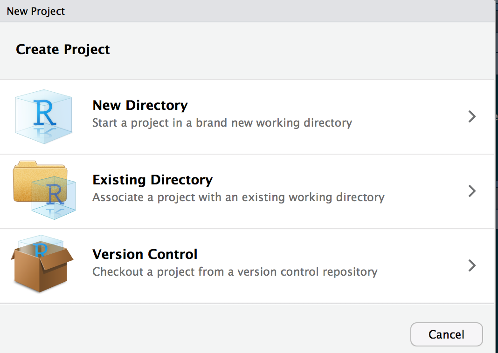
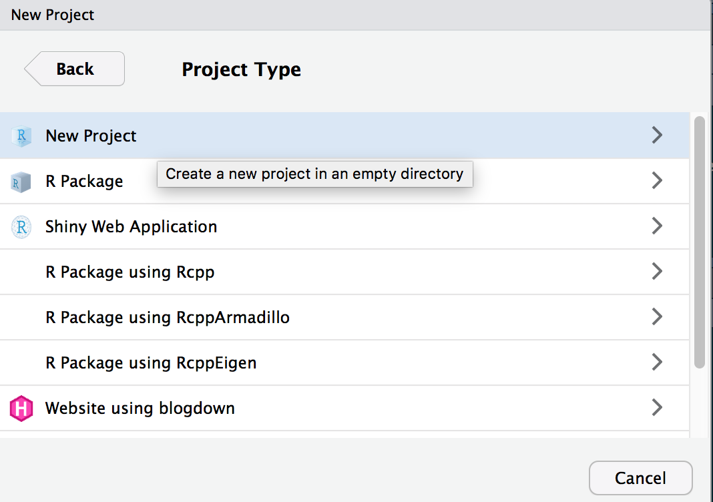
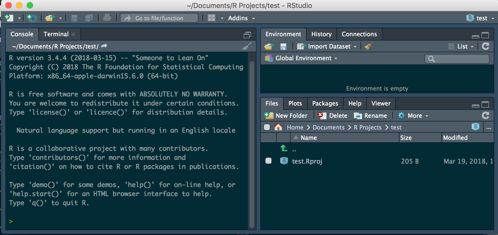
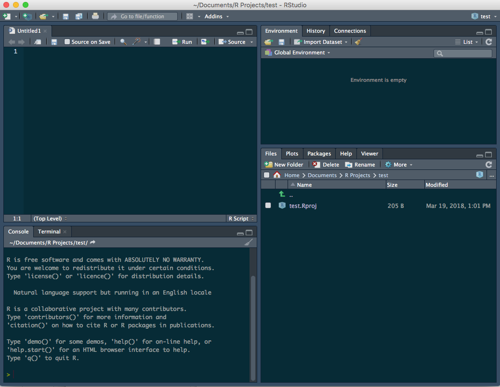

Designing a project from the ground up.
##Steps to consider
So the first thing to think about in my opinion is the workflow or dataflow:
##Data Source Format ###Controlled vocabulary and units
Thinking about your data source first is important. Using a controlled vocabulary to reference the variables is critical and will save huge amounts of time when modifying the code later on. I find it helpful to have a meta data document with the vocabulary and the units for each term so that future users can figure out what your code means.
###Variable names
As part of controlled voabulary, the way you type the variable names is also important and also important to be consistent
the key is that you should have no spaces or special characters. If you do have spaces you use the back tick `on either side of the variable to call it.
Special characters are often coded differently in mac and pc computers and will cause more headaches than you have after St. Patricks Day.
###Transformations
Keeping a list of transformations can be helpful in coding and if it is in the meta data file, you can copy the transformations out of the document and if there are mistakes people can track it down fast.
###Data structure and format R uses a column format and all the data in a column has to be of the same type. You can, however, refernece data by row and column as in excel.
The most common data formats you will run into are:
Note that if you mix formats within a column some of the variables will be converted to NA if say you have a column that is a character column which has mixed numbers and text and is then converted to numeric
###Wide format original data
Typically when we enter data it is in wide format where an identifier is down the first column and the various variables are in separate columns. This is what is often easiest to enter into excel or wherever it is entered originally.
This format is often more difficult to work with in R and GGPlot so it is converted to long format where there is a column of identifiers, a column of variable names, and a column of values. The switch between these formats is often rather easy so it does not matter what format it is in.
wide format:
This is how you would likely enter it in excel
Columns would be:
long format:
This would condense this format to fewer columns:
###Output
I find it useful to maintain a read only file of the original data and never write to this file other than the original QA/QC flagging of the data if even then. I usually read from this file and save it to the finalized data folder where the data has been cleaned formatted and basic calculations done on it.
##Data Flow
It is often very helpful prior to doing any code work to think about what the final output will look like and what the original data looks like and the steps between these two points.
##Directory structure
Having a consistent directory structure where code, data, and text is stored makes it easy to look at different directories and find what you are looking for. That is why I use the following structure. Choose what works for you and stick with it… please
- r_projects
- scripts
- documents
- data
- figures or output
- final_data
Using projects in R is super useful and you don’t have to worry about setting directories between a mac and windows machine and all the paths are relative in there when you reference data or output directories and is the same on windows and mac.
##File names From the site File organization and best practices and Prime Hints naming files has many good practices. Of these the main theme is:
##Annotations and metadata files
For the love of all that is good - be sure to annotate you code using the # and whatever text helps describe the process you are doing - it will make the code easier to read and evaluate later when you are trying to figure out something really fast. You can also use it to search for code snippets as you are going along.
Metadata files that document what you are doing and why and what the various conversions and statistical transformations are can be of great use later on as well. It is often challenging to figure out what the units are in for various variables or what they actually mean.
##RStudio Specifics
###Outline your code to navigate
You can write a comment # and then follow it with text and then 4 dashes ---- or #### and it will create a note in the outline view
###Comment your code
You should use comments # with text behind it to annotate the purpose of what your are doing and what is happening in the code chunk below.
##Installing R So lets start installing R and R studio
R is its own program and can be retrieved from R Cran
R Studio is a program that makes the interface and usability of R easier in my opinion and can be retrieved here R Studio
When you get these installed we can load up R studio and look at the interface.
###R interface Start R studio and you should see: 
###Project Setup Now to set up a new project - this is if the directory does not exist Click: 1. File 2. New Project 
You can select New Directory or you can select existing directory - lets say you choose new directory 
For now you are doing a New Project. We will talk about Github at a later date
Direcotry Name for Porject
Interface changes only slightly - look in the upper right

###Scripts
Now we can create a new script
New Script
Now the interface looks like 
###Install Libraries The key to R in my opinion is to install libraries. We will practice with one and your homework is to install the others.
You will type:
#install libraires ----
install.packages("tidyverse")
#load libraries----
library(tidyverse)
Then after each you will hit command or control return and it will run the command or you can click run.
Here is a list of packages I have found useful
tidyverse
lubridate
readxl
scales
patchwork
janitor
skimr
others not loaded each time:
reshape2
other specialties
devtools
A different type of installation for the USGS data
install_github("USGS-R/dataRetrieval")
install.packages("dataRetrieval")
install.packages("dataRetrieval",
repos=c("http://owi.usgs.gov/R",
getOption("repos")))